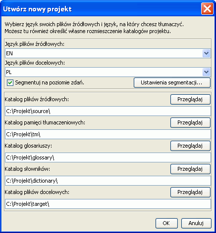

Niniejsza instrukcja obejmuje tylko podstawy. Byłoby dobrze, gdyby każdy użytkownik przeczytał podręcznik użytkownika, aby zapoznać się ze wszystkimi możliwościami programu OmegaT. Skróty klawiszowe opisano tutaj jako "ctrl+klawisz", ale użytkownicy MacIntosha powinni czytać to jako "cmd+klawisz". Klawisz "cmd" na klawiaturach Apple ma albo napis "command", albo znak jabłka>.
Ekran OmegaT stanowi jeden obszar z trzema oddzielnymi oknami. Rozmiar każdego z nich można zmieniać za pomocą myszy. Po lewej znajduje się okno edycji, w którym wpisujesz tłumaczenie. Po prawej, na górze, znajduje się okno dopasowań rozmytych, w którym będą wyświetlane dopasowania z pamięci tłumaczeniowej. Pod nim znajduje się okno glosariuszy, w którym będą wyświetlane dopasowania z glosariuszy.
W oknie edycji OmegaT pokazuje tekst źródłowy 'podzielony na segmenty' (zdania lub akapity). Segmenty tłumaczy sie kolejno. Kiedy przechodzisz z segmentu do segmentu, twoje tłumaczenia są zapamiętywane w pamięci tłumaczeniowej. Kiedy wszystkie segmenty zostaną przetłumaczone (albo wcześniej, jeśli chcesz) OmegaT użyje pamięci tłumaczeniowej do utworzenia przetłumaczonego dokumentu (dokumentów) w katalogu “target”.
OmegaT organizuje twoją pracę w tak zwanych projektach tłumaczeniowych. Dla każdego projektu OmegaT stworzy zestaw katalogów. Są one używane do przechowywania dokumentów źródłowych przeznaczonych do przetłumaczenia oraz glosariuszy i pamięci tłumaczeniowych, z których możesz chcieć korzystać. OmegaT tworzy także katalog “target”, który będzie zawierał docelowe, przetłumaczone dokumenty.
Wybierz z menu Projekt → Nowy....
Przejdź do katalogu, w którym chcesz zapisać pliki projektu, i podaj nazwę, jaką chcesz nadać projektowi tłumaczeniowemu. Ta nazwa zostanie nadana głównemu katalogowi projektu; wszystkie pliki projektu będą przechowywane w tym katalogu lub jego podkatalogach.
OmegaT poprosi o potwierdzenie lub zmianę katalogów projektu, które mają zostać utworzone, korzystając z poniższego okna dialogowego:

Możesz po prostu zaakceptować położenie podkatalogów, ale upewnij się najpierw, że kody języków - źródłowego i docelowego - są prawidłowe. Wybierz kod języka (2 lub 3 litery) lub kod języka i kraju (2+2 lub 3+2 litery) z listy albo wpisz go ręcznie. Zapamiętaj położenie podkatalogu target (na przetłumaczone dokumenty). Jeżeli chcesz, żeby program OmegaT segmentował tekst na zdania, a nie na akapity, dobrze jest dokładnie sprawdzić zasady segmentacji.
Kiedy klikniesz OK, aby zaakceptować ustawienia projektu, OmegaT poprosi cię o wybranie dokumentów źródłowych do zaimportowania. Możesz importować pojedyncze pliki lub całe drzewa katalogów (z wszystkimi podkatalogami). Jeżeli przypadkowo zaimportowałeś niewłaściwe dokumenty lub zbyt wiele dokumentów, możesz po prostu usunąć je z katalogu "source" twojego projektu OmegaT (używając na przykład menedżera plików twojego systemu).
Listę plików przeznaczonych do przetłumaczenia możesz sprawdzić w oknie Pliki projektu (Menu: Projekt → Pliki projektu..., jeśli nie otwiera się automatycznie). Jeżeli musiałeś zmienić zawartość katalogu "source", pamiętaj wczytać ponownie projekt (menu: Projekt → Wczytaj ponownie). OmegaT domyślnie otwiera pierwszy plik z listy. Pamiętaj, program OmegaT może tłumaczyć tylko pliki w formatach wymienionych poniżej, jeśli pasują do wzorców zdefiniowanych w filtrach plików. Wszystkie inne pliki będą pomijane.
OpenDocument/OpenOffice.org
Pliki tekstowe niesformatowane (znakowe)
Pliki PO (.po)
Bundle.properties Java
XHTML, HTML
HTML Help Compiler
Pliki INI (format "klucz=wartość") (.ini)
DocBook
Microsoft Open XML
Okapi monolingual XLIFF
QuarkXPress CopyFlowGold
Pliki napisów (SRT)
ResX
Android resource
LaTeX
Kiedy już zdefiniowałeś projekt i pliki do przetłumaczenia, OmegaT otworzy pierwszy plik źródłowy w oknie edycji.
W aktywnym segmencie tekst źródłowy jest podświetlany na zielono; kopia tekstu źródłowego jest wyświetlana pod nim, w “polu docelowym”. (W tym momencie cały tekst poza polem docelowym jest chroniony i nie może zostać zmieniony). Musisz wpisać swoje tłumaczenie pomiędzy znacznikami <segment 0001> i <koniec segmentu>, zastępując tekst źródłowy. Wciśnij "ENTER", aby przejść do następnego segmentu. Uwagi:
Aby przejść do innej części tekstu, powyżej albo poniżej, kliknij dwukrotnie na zdaniu lub akapicie, który chcesz otworzyć.
Jeżeli wolisz wpisywać tłumaczenie do pustego pola docelowego, ustaw tę opcję w Opcje → Parametry edytora....
Możesz zmienić ustawienia okna edycji (na przykład, żeby pokazywało tekst źródłowy lub nie, podświetlało tekst przetłumaczony itp.) w podmenu Widok
Kiedy wciskasz "ENTER", wiele rzeczy dzieje się w sposób niewidoczny: OmegaT dodaje parę segmentów (segment źródłowy i jego tłumaczenie) do pamięci tłumaczeniowej i, również automatycznie, tłumaczy wszystkie pozostałe identyczne segmenty, jakie znajduje w innych plikach projektu. Przeszukuje także pamięć tłumaczeniową i glosariusz w poszukiwaniu dopasowań dla następnego nieprzetłumaczonego segmentu.
Jeśli OmegaT znajduje w dostępnych pamięciach tłumaczeniowych jakieś dopasowania rozmyte (co najmniej 30%) dla następnego segmentu, wyświetla je w oknie dopasowań rozmytych. Pierwsze dopasowanie w oknie dopasowań rozmytych jest domyślnie wstępnie wybierane.
W celu wstawienia dopasowań pamięci tłumaczeniowej z okna dopasowań rozmytych do pola docelowego możesz użyć skrótów klawiszowych:
Wciśnij Ctrl+I, żeby wstawić wybrane dopasowanie w pozycji kursora albo...
Wciśnij Ctrl+R, żeby zastąpić cały segment wybranym dopasowaniem.
Jeżeli znaleziono wiele dopasowań i nie chcesz wykorzystać dopasowania wybranego domyślnie:
Wybierz dopasowanie, które najbardziej ci odpowiada, spośród przedstawionych w oknie dopasowań rozmytych: Ctrl+2, jeśli wybierasz drugie z wyświetlonych dopasowań, Ctrl+3, jeśli trzecie, itd.
Następnie skorzystaj ze skrótów klawiszowych Ctrl+I lub Ctrl+R opisanych powyżej.
(Możesz polecić, aby program OmegaT przy otwieraniu segmentu automatycznie wstawiał do pola docelowego pierwsze dopasowanie powyżej podanej wartości procentu dopasowania. Możesz wybrać tę opcję w Opcje → Parametry edytora...)
Pasujące terminy w glosariuszach i słownikach, które możesz mieć dołączone do projektu, będą wyświetlone jako odniesienie w oknach glosariuszy i słowników.
OmegaT zapewnia szeroki zakres funkcji wyszukiwania. Wywołaj okno wyszukiwania za pomocą Ctrl+F i wprowadź słowo lub wyrażenie, których chcesz szukać, w polu "Wyszukaj". Lub w inny sposób - wybierz słowo lub wyrażenie w dowolnym miejscu okna edycji i wciśnij Ctrl+F . Słowo lub wyrażenie jest w tym przypadku wpisywane w pole "Wyszukaj" automatycznie.
Ctrl+M.Kiedy przetłumaczysz wszystkie segmenty (lub wcześniej, jeśli chcesz), OmegaT uaktualni dokument docelowy (dokumenty docelowe), korzystając z tłumaczeń zapamiętanych w pamięci tłumaczeniowej. Aby to zrobić, wybierz z menu Projekt → Utwórz dokumenty docelowe. OmegaT utworzy przetłumaczone wersje wszystkich możliwych do przetłumaczenia dokumentów w katalogu źródłowym (source) projektu, niezależnie od tego, czy zostały całkowicie przetłumaczone. Całkowicie lub częściowo przetłumaczone pliki zostaną zapamiętane w katalogu docelowym (target) projektu. Aby zakończyć tłumaczenie, otwórz pliki docelowe w przypisanych do nich aplikacjach (przeglądarka, edytor tekstu...) w celu sprawdzenia zawartości i formatowania twojego tłumaczenia. Możesz wtedy powrócić do programu OmegaT, żeby wykonać potrzebne poprawki; nie zapomnij ponownie utworzyć dokumentów docelowych.
Formatowanie dokumentów źródłowych (pogrubienie, kursywa itp.) nie jest tracone dzięki temu, że OmegaT oznacza je specjalnymi znacznikami. Znaczniki OmegaT złożone są z jednej lub więcej liter, po których następuje jedna lub więcej cyfr, znak "/" używany jest do zamknięcia (na przykład: <f0>, </f0> <br>, </s2> itd.). Należy obchodzić się ostrożnie z tymi znacznikami i upewnić się, czy zostaną prawidłowo włączone do segmentów docelowych (patrz Operacje na znacznikach).
W tych przykładach znaczniki są podświetlone, aby były lepiej widoczne, ale OmegaT ich nie podświetla. Znaczniki HTML, podświetlone na niebiesko, będą pomijane przez OmegaT, bo całkowicie otaczają segment. Znaczniki podświetlone poniżej na zielono muszą być obsługiwane przez OmegaT, bo znajdują się wewnątrz segmentu. Oto przykład segmentu w HTML:
<p>Inną czcionkę wyświetlaną można wybrać w oknie dialogowym <b>Czcionka wyświetlana</b>. Otwiera się je, wybierając pozycję menu <i>Opcje</i> → <i>Czcionka...</i>. W oknie dialogowym można zmienić rodzaj i rozmiar czcionki.</p>
Tak OmegaT wyświetli ten segment, z tłumaczeniem na język afrykanerski:
Kiedy OmegaT utworzy dokument docelowy, HTML będzie wyglądał następująco:

OmegaT nie wykrywa automatycznie błędnych znaczników w dokumencie docelowym. Zanim dostarczysz dokument twojemu klientowi, powinieneś więc sprawdzić, czy nie ma błędów dotyczących znaczników. Wybierz z menu Narzędzia → Popraw znaczniki. Zostanie wyświetlona tabela, pokazująca segmenty, w których znaczniki w części źródłowej i docelowej nie są zgodne. Kliknij na numerze segmentu. Przeniesiesz się automatycznie do wątpliwego segmentu w oknie edycji, gdzie możesz poprawić znaczniki. Wciśnij Enter, żeby zatwierdzić poprawiony segment i sprawdź poprawkę, wciskając ponownie Ctrl-T.
W niektórych przypadkach błędy znaczników mogą nawet nie pozwolić na otworzenie dokumentu. Powinieniś więc upewnić się, że poprawiłeś wszystkie błędy znaczników, zanim utworzysz pliki docelowe. Na koniec, powinieneś zawsze dokładnie sprawdzić ostateczne formatowanie, otwierając dokument docelowy w przypisanej do niego przeglądarce lub edytorze.
W niektórych językach programowania (np. PHP, C) są używane specjalne znaczniki jako symbole zastępcze w ciągach znaków, które są używane w połączeniu z funkcją printf. OmegaT może wykrywać i sprawdzać te znaczniki, jeśli uaktywnisz taką możliwość. Wybierz z menu Opcje → Walidacja znaczników... . Możesz wybrać walidację uproszczoną lub pełną. Przy walidacji uproszczonej używane są tylko proste warianty możliwych wartości symboli zastępczych. Jest to przydatne, kiedy kod źródłowy nie zawiera bardziej złożonych symboli zastępczych i dostajesz wiele fałszywych informacji o błędach.
| Uwagi prawne | Spis treści | Indeks |